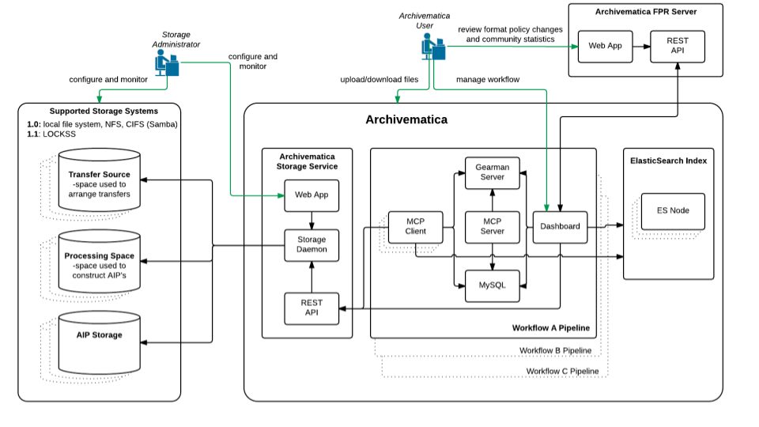

技術アーキテクチャ¶
{kind=link}

Archivematicaの技術概要¶
このページでは、Archivematicaの技術アーキテクチャの概要を説明します。
マイクロサービス設計パターン¶
Archivematicaは、デジタル保存のためのマイクロサービス・アプローチを実装しています。Archivematicaのマイクロサービスは、OAISの情報パッケージに相当する概念的なエンティティ上で動作する粒度の細かいシステムタスク：投稿情報パッケージ（SIP）、アーカイブ情報パッケージ（AIP）、普及情報パッケージ（DIP）です。情報パッケージの物理的な構造には、ファイル、チェックサム、ログ、提出文書、XMLメタデータなどが含まれます。
詳細は、 マイクロサービス を参照してください。
外部ツール¶
Archivematicaは、オープンソースのフレームワークやサービスを利用して構築されています。
詳細は、 外部ツール を参照してください。
ウェブベースのダッシュボード¶
The web dashboard allow users to process, monitor, and control the Archivematica workflow processes. It is developed using the Python-based Django MVC framework. The Dashboard provides a multi-user interface that will report on the status of system events and make it simpler to control and trigger specific microservices. This interface allows users to easily add or edit metadata, coordinate AIP and DIP storage, and provide preservation planning information. Notifications include error reports, monitoring of MCP tasks, and manual approvals in the workflow.
詳細については、 ウェブベースのダッシュボード を参照してください。
フォーマットのポリシー¶
Archivematicaは、移行やエミュレーション戦略をサポートするために、インジェストされたすべてのファイルのオリジナルフォーマットを保持します。しかし、主な保存戦略は、インジェスト時にファイルを保存形式とアクセス形式に正規化することです。Archivematicaは、ファイルフォーマットをフォーマットポリシー（テキスト、オーディオ、ビデオ、ラスターイメージ、ベクターイメージなど）にグループ化します。Archivematicaの保存形式は、すべてオープンスタンダードでなければなりません。さらに、フォーマットの選択は、コミュニティのベストプラクティス、フリーでオープンソースの正規化ツールの利用可能性、各メディアタイプの重要な特性の分析に基づいています。アクセスフォーマットの選択は、主にファイルフォーマット用のWebベースのビューアが普及しているかどうかに基づいています。
1.0 製品リリース以降、Archivematica フォーマットポリシーは、構造化されたオンラインフォーマットポリシーレジストリ (FPR) に移動されました。FPR は、フォーマット識別情報と重要な特性分析、リスク評価、正規化ツール情報を組み合わせて、Archivematica のデフォルトの保存フォーマットとアクセスフォーマットポリシーを決定します。
詳しくは、 保存計画 を参照してください。
転送からSIP、AIP、DIPへ¶
Archivematicaの主な機能は、 METS 、 PREMIS 、 Bagit を使用して、デジタル転送（アクセションされたデジタルオブジェクト）を処理し、SIPに変換し、フォーマットポリシーを適用し、高品質でリポジトリに依存しないアーカイブ情報パッケージ（AIP）を作成することです。Archivematicaは、 AtoM とバンドルできますが、説明メタデータとウェブ対応アクセスコピーを含む普及情報パッケージ（DIP）を、あらゆるアクセスシステム（DSpace、ContentDMなど）にアップロードするように設計されています。
シングルインストール¶
Archivematicaは、Linuxベースのオペレーティングシステム、仮想マシン、または専用ハードウェアにインストールできます。一度のインストールで、デジタル保存ツールの全機能を利用できます。Archivematicaのクライアント／サーバ処理アーキテクチャにより、マルチノード、分散処理設定で導入でき、大規模でリソース集約型のプロダクション環境をサポートします。
詳細については、 Archivematicaのインストール を参照してください。